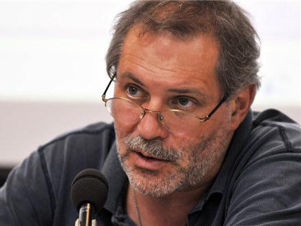

«Однако». Первый канал.
Идеологический голос Кремля с 1999 года.

6 октября 1958 года. Экономическое образование — Московский институт народного хозяйства. В 1980–90-е работает в «Деловом мире», «Сегодня», «Независимой газете». Репутация умного либерального журналиста. Эволюция в обратную сторону займёт меньше десяти лет.
Запускает короткий авторский комментарий «Однако» — 3 минуты в конце каждого выпуска новостей. Формат — интеллектуальный монолог человека, который «видит то, что другие не замечают». За 20+ лет «Однако» выходит около 5000 раз. Идеологический фундамент путинского ТВ.
Формирует риторику суверенной демократии, имперского реванша, противостояния с «англосаксами». Его «Однако» — более изощрённый инструмент, чем крик Соловьёва: он обращается к думающей аудитории и предлагает «рациональные аргументы» для иррациональных позиций.
Становится официальным пресс-секретарём государственной нефтяной компании. Интерпр. Журналистская карьера официально превращается в корпоративно-государственную. Медийный авторитет теперь напрямую служит крупнейшей госкорпорации страны.
ЕС и Великобритания вводят санкции. Факт Леонтьев поддерживает вторжение в терминах «исторической необходимости» и «геополитического баланса». Двадцать лет риторической подготовки к этому моменту.
Леонтьев продолжает совмещать роль пресс-секретаря «Роснефти» и публичного комментатора войны. В 2024 году активно продвигает тезис о том, что западные санкции против российских энергоносителей «выстрелили в Европу» — на фоне реального энергетического кризиса в ЕС. После гибели Навального назвал его «агентом Запада, отработавшим свою роль». Его телевизионные выступления становятся всё реже, зато Telegram-активность — интенсивнее.
Леонтьев — один из немногих пропагандистов его поколения, кто открыто рассуждает о «постзападном мироустройстве» как о свершившемся факте. На переговорном треке 2025 года занял позицию: «Запад не будет диктовать условия — слишком ослаб». Его взгляды на Трампа — как на «прагматика, понимающего пределы американской мощи» — совпадают с кремлёвским нарративом. Роснефть под санкциями — он по-прежнему её лицо.
Короткий формат после выпуска новостей — идеальная позиция. Зритель только что получил «факты» из новостей. Леонтьев объясняет их «смысл» — в нужном ключе. Без дискуссии, без оппонента.
Ссылки на историю, геополитику, экономику. Имена Черчилля, Бжезинского, Макиндера. Пропагандистский тезис подаётся как вывод из серьёзного анализа — для аудитории, которая считает себя образованной.
Название программы — само по себе риторический приём. «Однако» означает: «все думают так, но на самом деле вот как». Позиция знающего, который видит скрытое. Автоматически ставит ведущего выше аудитории.
Двойная должность: государственная нефтяная корпорация + главный государственный телеканал. Экономические и медийные интересы государства в одном лице. Конфликт интересов как система.
«Леонтьев создал формат, который стал образцом для российской пропаганды: короткий, авторитетный, "аналитический" монолог без возможности ответа.»
«Он несёт ответственность за формирование антизападного дискурса в России на протяжении двух десятилетий. Без "Однако" Соловьёв был бы невозможен.»
«Совмещение должностей пресс-секретаря "Роснефти" и ведущего главного государственного канала — это не конфликт интересов. В России это называется "государственная медиаполитика".»
Все утверждения в данном досье основаны на открытых публичных источниках. Факты, отмеченные Факт, имеют прямые первичные источники. Отмеченные Интерпр. — авторская интерпретация задокументированных событий.